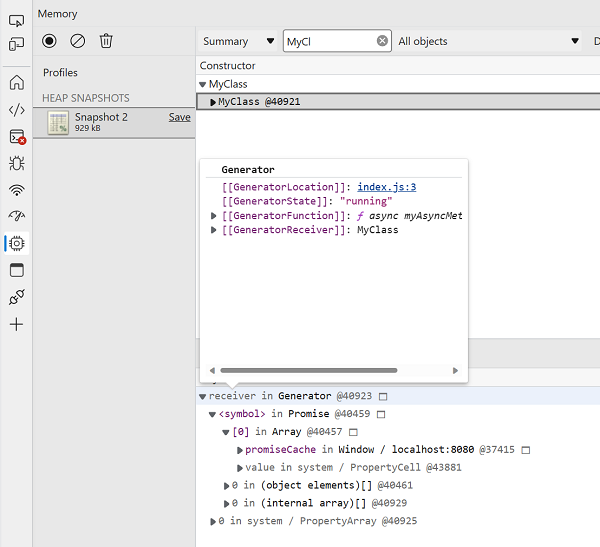

This project contains a simple example of a very tricky memory leak. It is a simplified version of something that is happening in a real production app, with all non-essential parts stripped away. It may seem a bit weird, but (trust me) in the real app, there are sensible reasons for wanting to structure code this way.
If you click the "create a new class and make it leak" button, you will run this code:
They, if you create a heap snapshot in chrome devtools, you'll see the retained MyClass object, the first retainer is myAsyncMethod, and it's represented as a Generator object in the "running" state:
Strangely, the cached promise seems to have already resolved, so it's unclean why myAsyncMethod would still be running: